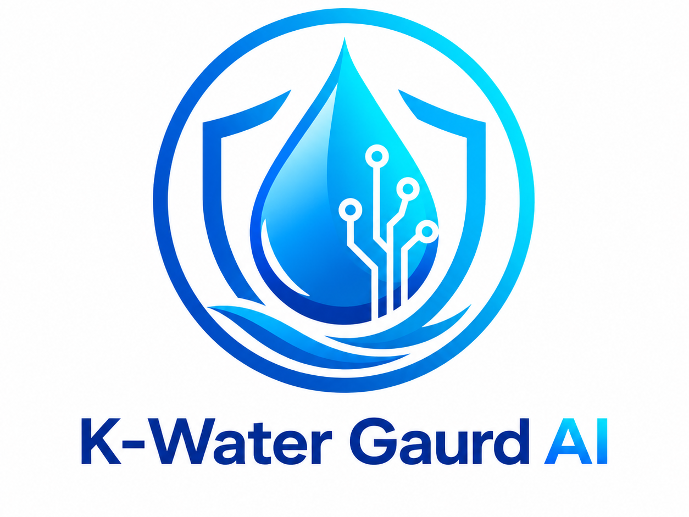
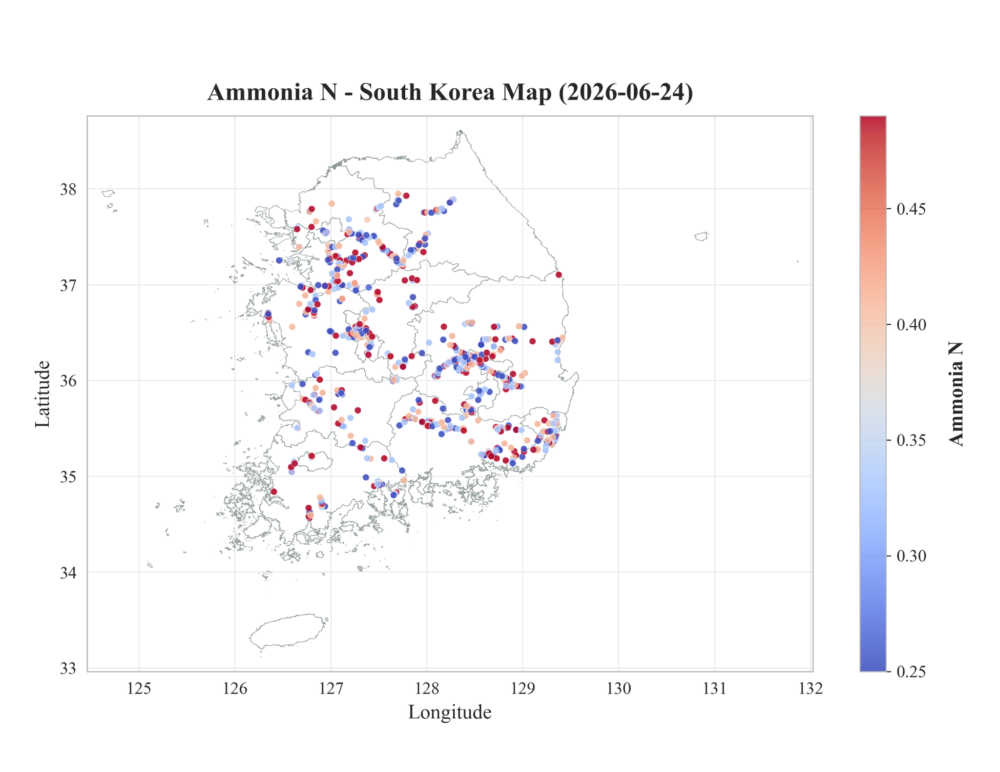
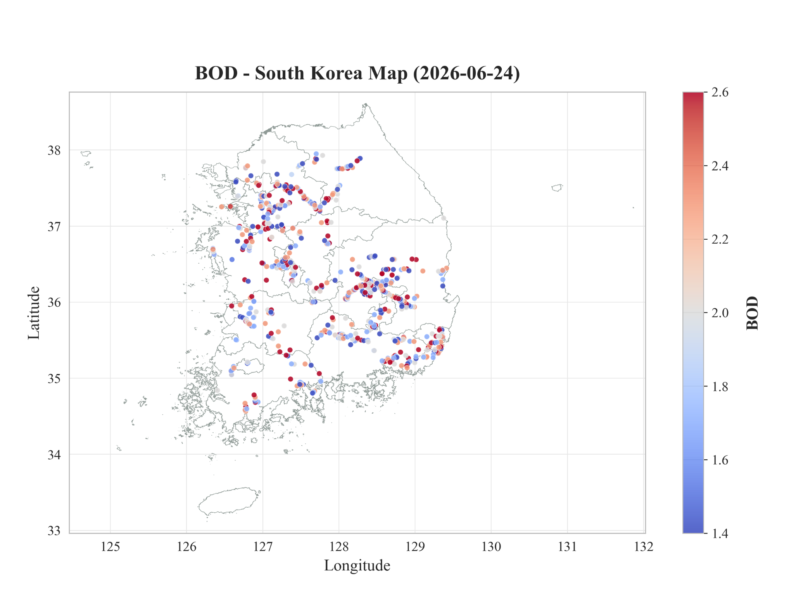
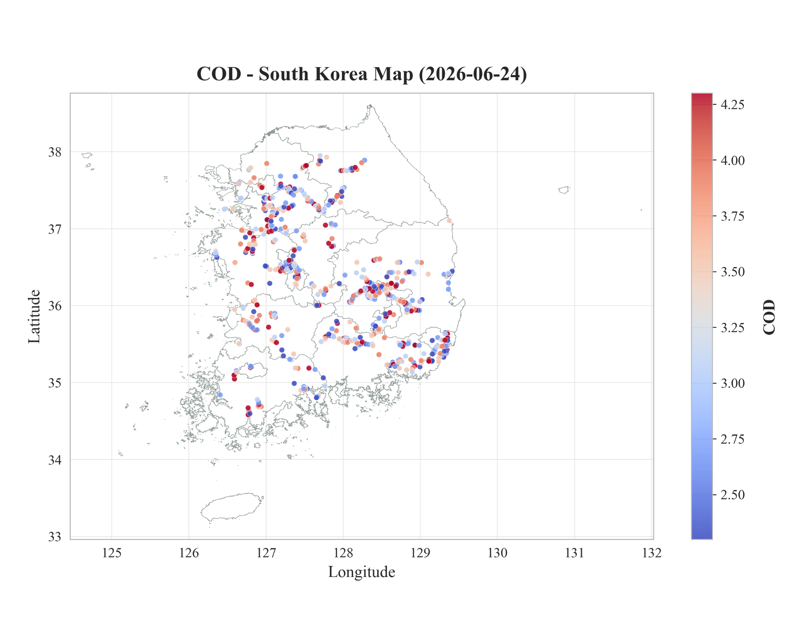
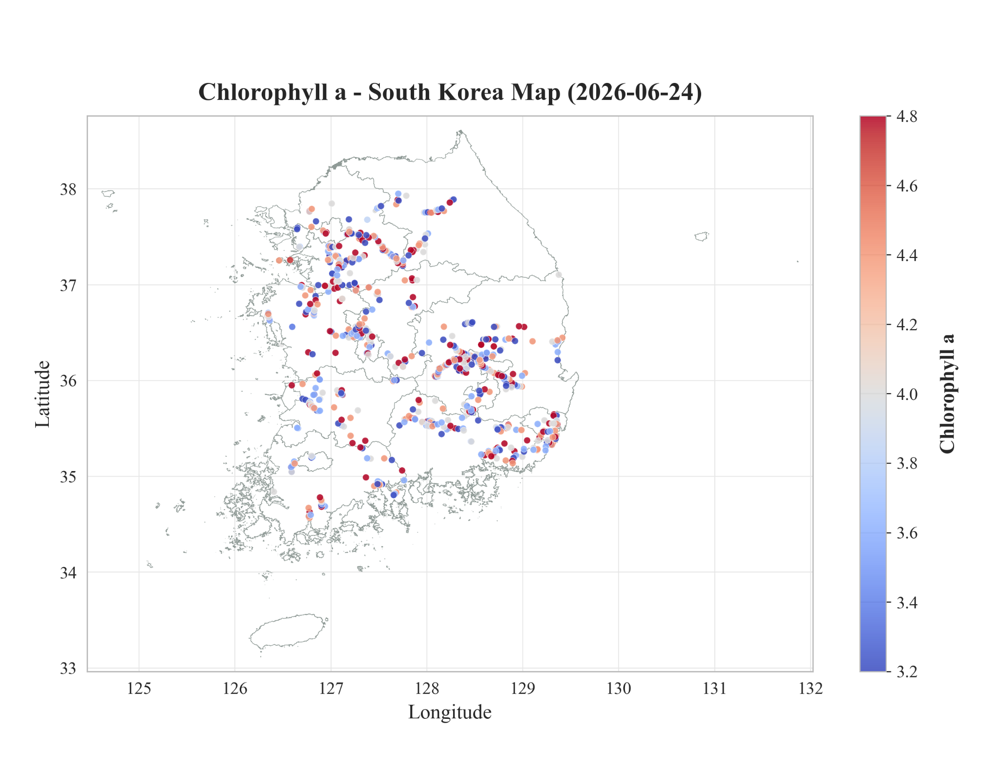
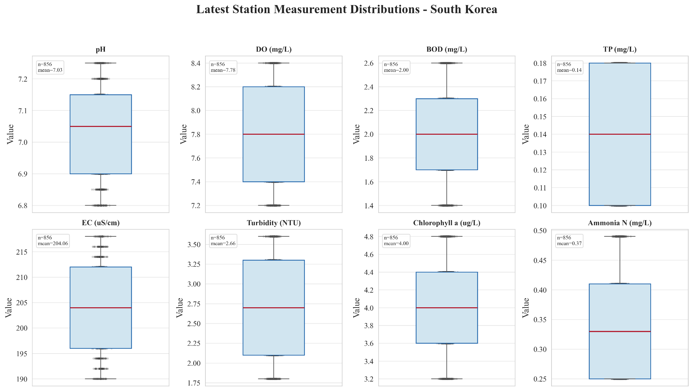
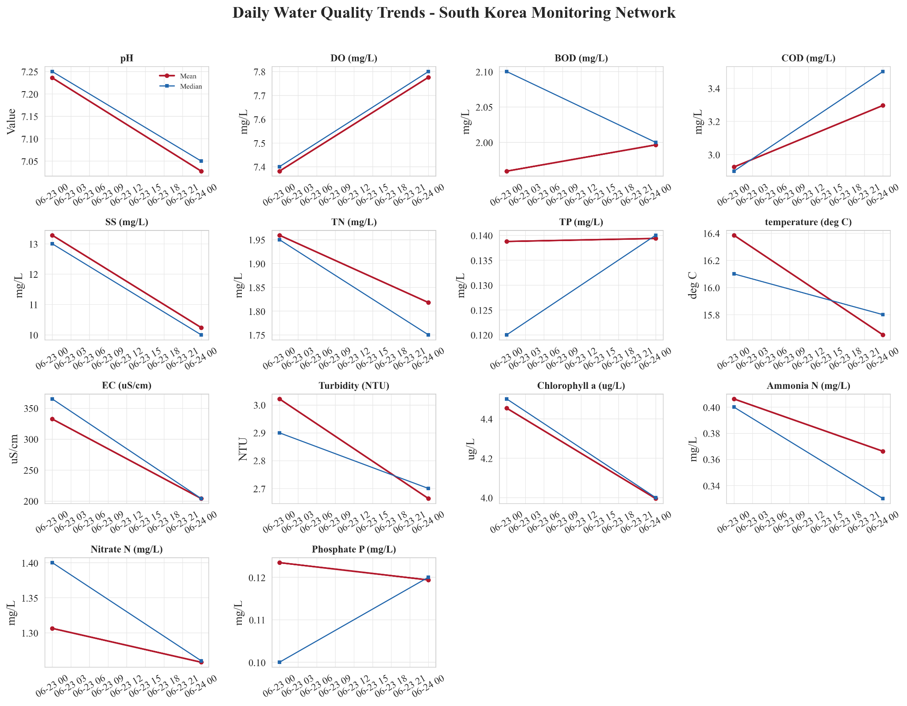
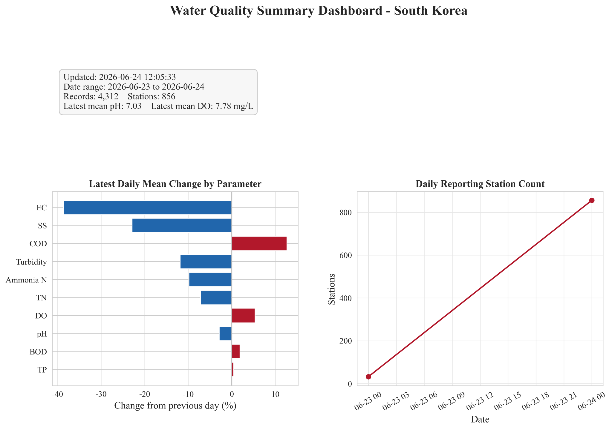
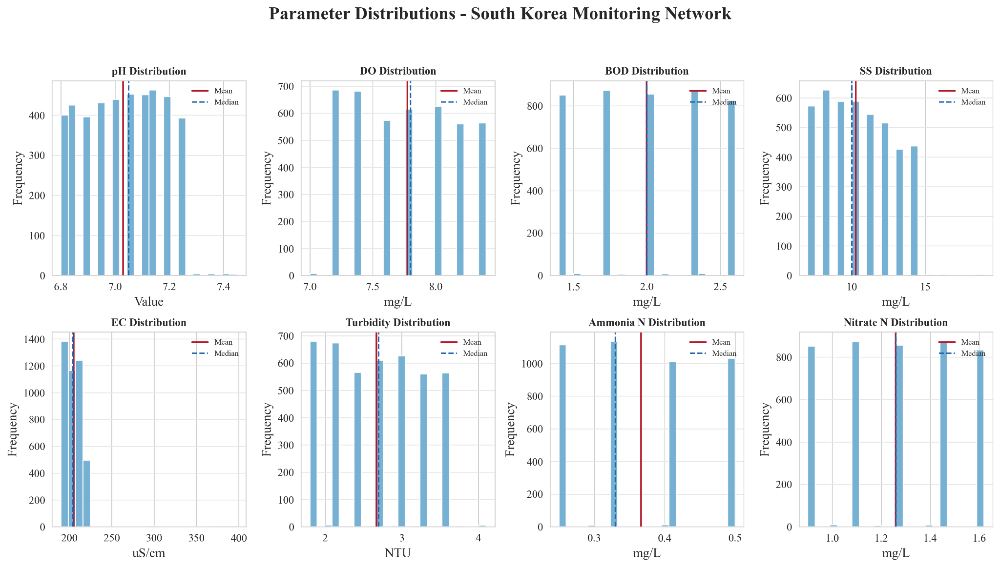

🌊 K-Water Guard AI Agent
Autonomous South Korea Water Quality Monitoring, Spatial Geospatial Mapping & Automated Predictive Reporting System developed by the Regional Water Environment System Lab (RWESL).
Core Agent Capabilities
K-Water Guard AI eliminates repetitive manual downloads by autonomously collecting, analyzing, and publishing nationwide water quality datasets on a continuous daily schedule.
Autonomous Data Collection
Continuously collects water quality records from public Korean monitoring station networks, drastically minimizing human data management overhead.
Automated Daily Data Storage
Organizes raw measurements into structured historical CSVs, clean master repositories, and location-based exports tailored for long-term hydrological modeling.
Real-Time Data Visualization
Generates time-series trends, parameter distribution charts, regional comparative summaries, and water quality signal boards automatically.
Spatial Water Quality Mapping
Renders station coverage maps, spatial heatmaps, and watershed-scale concentration gradients across major South Korean river basins.
Scheduled Background Automation
Executes autonomously via cron and scheduled agents, enabling true 24/7/365 uninterrupted environmental intelligence.
Cloud & Web Publishing
Publishes static web bundles to GitHub Pages and Google Drive, making dashboards accessible to researchers, government agencies, and students.
System Architecture, Spatial Maps & Analytical Charts
Visual outputs generated directly by the K-Water Guard AI Agent from Korean public water quality sources.

Agent Workflow & System Architecture
High-level agent architecture outlining automated public API ingestion, verification, and CSV export.
Data Cleaning & Quality Assurance
Automated range-validation, statistical outlier flagging, and continuous master repository updates.
Spatial Water Quality Mapping
Geospatial contour maps tracking parameter gradients across South Korea's river basins.

Ammonia-N Telemetry (26-06-2026)
Nationwide concentration contour map and monitoring station status for Ammonia-N.

Ammonia-N Frequency & Time-Series
Frequency distribution histograms and multi-station comparison curves for Ammonia-N.

BOD Spatial Mapping (26-06-2026)
Biochemical oxygen demand spatial interpolation across the Han, Nakdong, Geum, and Yeongsan basins.

BOD Statistical Distribution
Statistical boxplots, median concentration tiers, and standard compliance metrics for BOD.

COD Spatial Mapping (26-06-2026)
Automated chemical oxygen demand gradient mapping highlighting agricultural and industrial loading zones.

COD Trend Analytics
Temporal variance decomposition and station ranking matrices for Chemical Oxygen Demand.

Chlorophyll-a Mapping (26-06-2026)
Algal biomass spatial concentration surface used for early detection of harmful cyanobacteria blooms.

Chlorophyll-a Trend Baselines
Multi-year seasonality envelopes, bloom probability indices, and threshold alarm indicators.
14 Monitored Water Quality Parameters
Every parameter is standardized, statistically validated, and tracked across historical baselines.